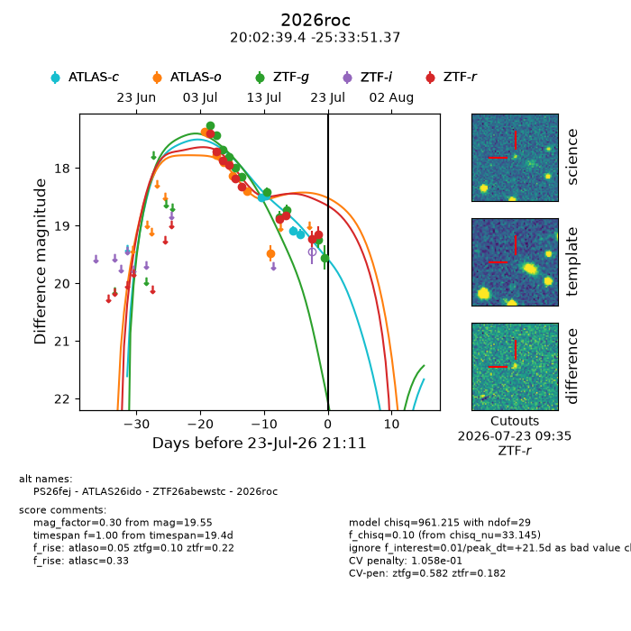
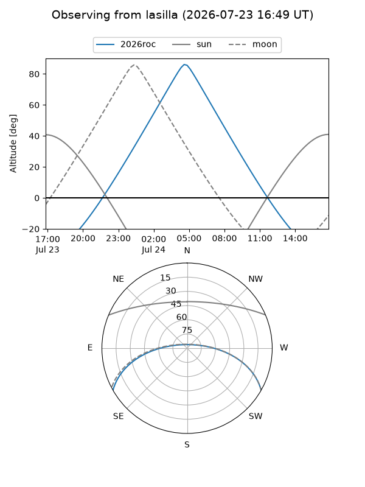
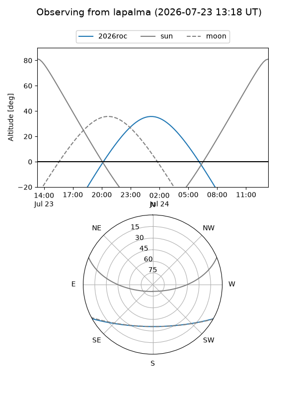
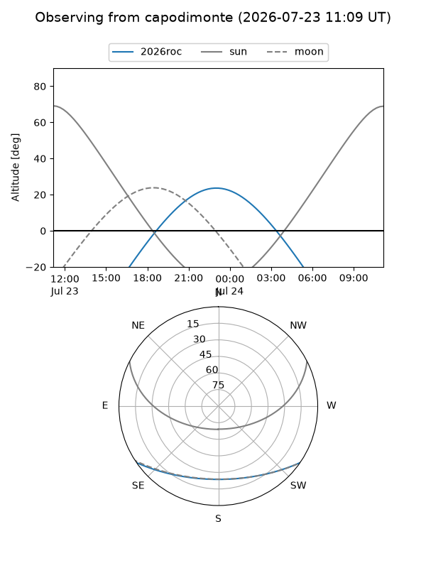
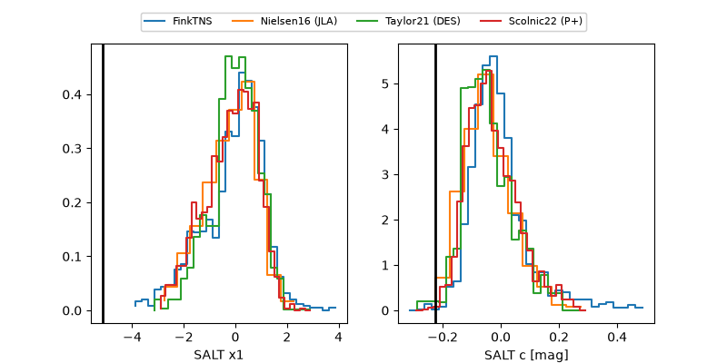

2026roc
Target 2026roc at 2026-07-23 21:14
Aliases and brokers:
FINK-ZTF: ztf.fink-portal.org/ZTF26abewstc
Lasair-ZTF: lasair-ztf.lsst.ac.uk/objects/ZTF26abewstc
ALeRCE-ZTF: alerce.online/object/ZTF26abewstc
YSE-PZ: ziggy.ucolick.org/yse/transient_detail/2026roc
TNS name: wis-tns.org/object/2026roc
Direct TNS query: direct search
alt names
ZTF26abewstc (ztf,fink_ztf)
2026roc (tns,yse)
ATLAS26ido (atlas)
PS26fej (panstarrs)
Coordinates:
equatorial (ra, dec) = 300.6642,-25.56427
equatorial (HMS+DMS) = 20:02:39.40,-25:33:51.37
galactic (l, b) = (16.1957,-26.24820)
Flags:
TNS type: CV
peak dt: +21.5
likely cv: !!
Photometry:
last atlasc=19.15, atlaso=19.48, ztfg=19.55, ztfr=19.15
4 atlasc, 8 atlaso, 11 ztfg, 10 ztfr detections
Lightcurve

Visibility



Additional plots
